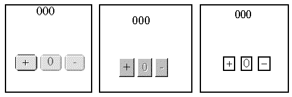

Chapter 2 - A whistle stop tour of the Abstract
Windowing Toolkit (AWT)
Chapter 2 - A whistle stop tour of the Abstract
Windowing Toolkit (AWT)
The ClickCounter interface from the previous chapter made use of the Button and Label components from the Java Abstract Windowing Toolkit (AWT) package. This toolkit supplies a number of classes, each providing an interface component which can be combined with other components to build a complete Graphical User Interface. To produce interfaces which are more complex than those introduced in Chapter 1 the classes which comprise the AWT have to be understood and used. This chapter will present each of the major classes from the toolkit in turn and indicate how it could be used within a GUI. This will necessarily be only an initial introduction to each of the classes and more details of most of the classes will be given in the following chapters.
The AWT is named as an abstract toolkit as it provides only the essential components and functionality which are common to all major windowing systems. For example the Microsoft Windows environment, the Apple Macintosh environment and the various X Windows environments all supply a push button component. However the physical appearance of the button, precise behaviour and API differ significantly between all three environments. Java abstracts the essential behaviour of a push button and provides an API which is presented to the developer in the AWT. When an instance of the Java Button class is realised, the actual button which is presented to the user is obtained from the native environment
. 
Figure 2.1 The
ClickCounterInterface applet in the Windows 95,
Macintosh and X Windows environments.
Figure 2.1 presents the ClickCounter interface from Chapter 1 when it is realised in each of the three environments listed above. In each case exactly the same Java source code is used and the user can interact with the application in exactly the same way. However the precise physical appearance is determined by the native windowing environment. All of the components of each of the implementations the three Buttons, the Label and the Panels which they are mounted upon, are supplied by peer components from the native windowing toolkit.
Chapter 2 - A whistle stop tour of the Abstract Windowing Toolkit (AWT)